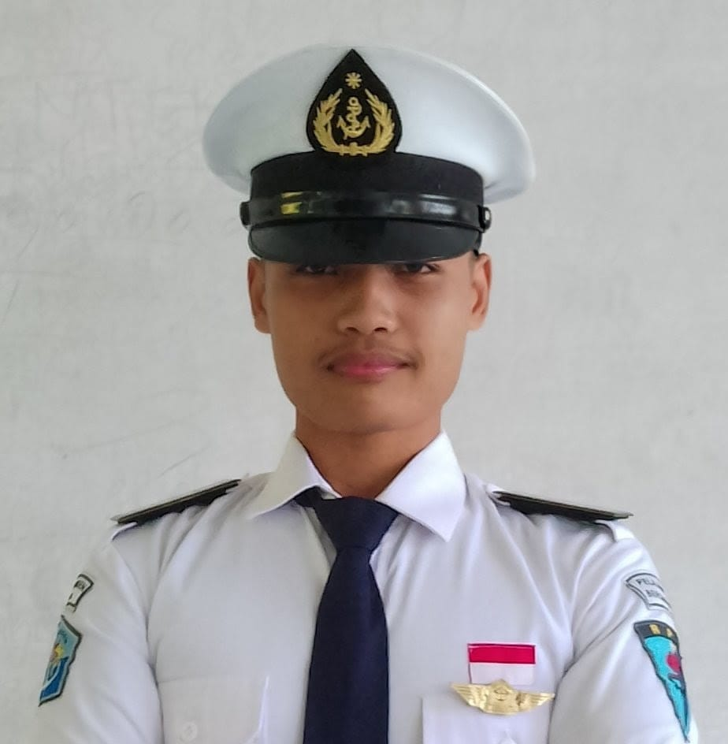

Zaenal Alif Nur Aziz
Siswa SMK jurusan Rekayasa Perangkat Lunak (RPL) dengan minat pada pengembangan web dan perangkat lunak. Terbiasa mengembangkan proyek berbasis web serta menggunakan database dan Git.

Nama: Zaenal Alif Nur Aziz
TTL: Bantul, 26 Juli 2008
Telepon: +62 812 2552 5943
Email: azizalif507@gmail.com
Alamat: Bantul, Yogyakarta
Jurusan Rekayasa Perangkat Lunak (RPL).
Mengembangkan sistem kasir berbasis web menggunakan HTML, CSS, JavaScript, PHP, dan MySQL.
Mendesain dan mengembangkan website sederhana dengan antarmuka interaktif dan responsif.